Asymmetric encryption schemes also support digital signatures that allow a receiver to authenticate the sender of a payload. In the prior lab, Bob wishes to verify that Alice could have been the only one to send him the encrypted file. As done previously, Alice creates the file and a symmetric key, encrypts the file with the symmetric key, then uses Bob's public key to encrypt the symmetric key.
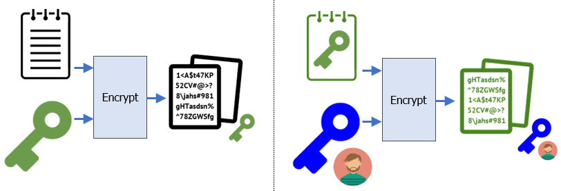
cd ~/Alice
python3 -c 'print(512*"A")' > file.txt
openssl rand 32 > sk.bin
openssl enc -aes-256-cbc -in file.txt -out ~/file_sk.enc -pass file:sk.bin
openssl pkeyutl -encrypt -in sk.bin -pubin -inkey ~/BobPubKey.pem -out ~/sk_BobPubKey.encSigning
To prove to Bob that she has sent the message, she then calculates the cryptographic hash (SHA-256) of the symmetric key and digitally signs it with her private key to produce the signed hash that will also be sent to Bob (~/sk_AlicePrivKey.sig) along with the encrypted file and symmetric key.
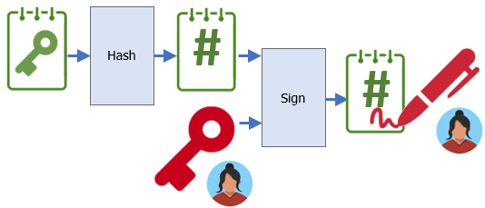
cd ~/Alice
openssl dgst -sha256 -sign AlicePrivKey.pem -out ~/sk_AlicePrivKey.sig sk.binAlice sends Bob the encrypted symmetric key, a digitally signed hash of the symmetric key, and the original file encrypted with the symmetric key. In addition, Bob finds Alice's public key that she has generated and published previously. From these three payloads, he can now decrypt the message as well as ensure it was sent by Alice.
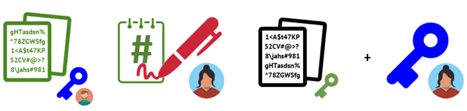
Verification
Bob first decrypts the encrypted symmetric key with his public key as before.

cd ~/Bob
openssl pkeyutl -decrypt -in ~/sk_BobPubKey.enc -inkey BobPrivKey.pem -out sk.binThen, he verifies Alice has sent the key by verifying the digital signature against the key he has just decrypted.
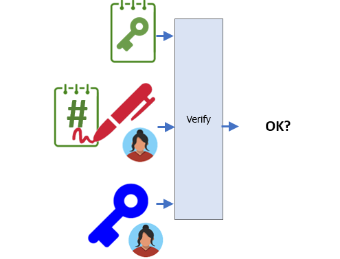
openssl dgst -sha256 -verify ~/AlicePubKey.pem -signature ~/sk_AlicePrivKey.sig sk.bin- Take a screenshot of the output of this verification to include for your lab notebook.
Finally, if the signature verifies Alice sent the symmetric key, Bob decrypts the original file encrypted with the symmetric key.

openssl enc -d -aes-256-cbc -in ~/file_sk.enc -out decrypt.txt -pass file:sk.bin
diff decrypt.txt ~/Alice/file.txtHow can Bob trust Alice's public key really is from Alice (and vice versa)? Over the Internet, typically via a chain of trusted third parties called certificate authorities. One such certificate authority is Let's Encrypt. In the steps below, we will create a simplified scenario that models how Let's Encrypt works. A more complete picture can be found here.
Setup
To begin with, the certificate authority generates its own keypair.
It then signs the public key and publishes the resulting certificate to all corners of the Internet via software distribution in web browsers and servers.
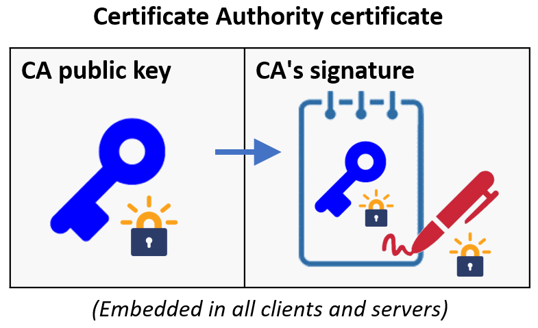
To emulate this, we'll create a directory for the CA, generate the keypair, and create the X.509 certificate (CA.crt) that is self-signed by the private key (CAPrivKey.pem). The certificate is published so that both Alice and Bob have a copy of it. As part of certificate generation, you will be asked to provide location information to attach with the certificate. Place the CA in New York, NY and name the organization Acme. Use your OdinID and PSU e-mail address as the common name and e-mail address.
mkdir ~/CA; cd CA
openssl genpkey -algorithm rsa -out CAPrivKey.pem
openssl req -x509 -new -nodes -key CAPrivKey.pem -sha256 -out ~/CA.crtExamine the certificate to view its Base64 encoding. Then, use openssl to examine its contents.
cat ~/CA.crt
openssl x509 -in ~/CA.crt -text -noout - Take a screenshot showing that the issuer and subject are the same, indicating the certificate is self-signed.
- How long is the certificate valid for?
Certificate request
Both Bob and Alice have been given the CA's certificate (CA.crt) via software distribution and will now implicitly trust signatures generated from the CA. Our goal now is to use this to establish trust between Bob and Alice. In our current scenario, we want Bob to trust that the public key he receives from Alice is legitimate. In order to prove this, Alice will take her public key and ask the trusted CA to sign it, thus generating her own certificate. Before doing so, however, the CA must take steps to validate Alice's identity. While some CAs will require off-line validation of identity before generating certificates, Let's Encrypt simply validates that a site proves it has control over the DNS record of a domain and the machines at the IP addresses the record points to. Alice prepares a signed certificate request (AliceSigningReq.csr) that includes her public key and is signed by her private key. As with the CA, she must also provide her location and contact information (Portland, OR, Alice Inc., Alice, alice@alice.com). OpenSSL will also prompt you for a password that is used for revoking certificates. Leave this blank.
cd ~/Alice
openssl req -new -key AlicePrivKey.pem -out AliceSigningReq.csr View the certificate request and see that it contains both Alice's public key, her certificate information, and a signature generated from her private key. Then, "send it" to the CA by copying it over to the CA directory.
openssl req -in AliceSigningReq.csr -text -noout
cp AliceSigningReq.csr ~/CASigned certificate
The CA takes the certificate request and attempts to prove its legitimacy. In the past, this meant meeting Alice or the company she represents in person. With Let's Encrypt, when "Alice.com" sends a certificate signing request, Let's Encrypt will instead check to see if Alice.com points to an IP address that the certificate request originates from. If it can be sure of this, it will then use its private key to sign the request and then generate a signed certificate for Alice that she can now use to authenticate her public key as shown below.
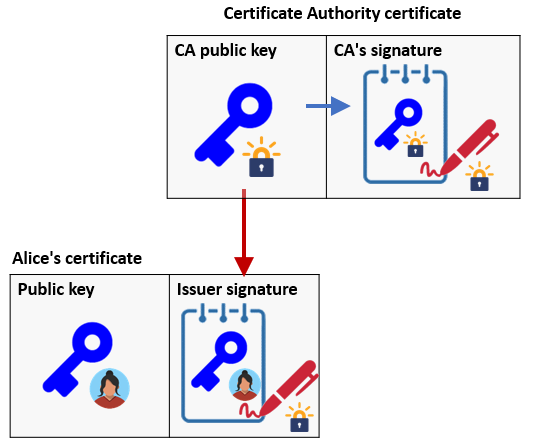
cd ~/CA
openssl x509 -req -in AliceSigningReq.csr -CA ~/CA.crt -CAkey CAPrivKey.pem -CAcreateserial -out ~/Alice.crt -days 500 -sha256View the resulting certificate.
openssl x509 -in ~/Alice.crt -text -noout- Take a screenshot of the fields of the certificate showing that Acme has issued Alice's certificate.
- How long is this certificate valid for?
Examine the signature attached to the certificate and compare it to the signature attached to the the certificate request.
- Is it the same or different than the signature in the certificate request?
- Explain why
Using the certificate
We can now answer how it is that Bob can trust Alice's public key really is from Alice by way of the CA. Bob is given Alice's certificate containing her public key and the CA's signature of it. He also obtain's the CA's public key from the CA's certificate. Using these three, he can then use the CA's public key to verify that the CA has signed Alice's public key indicating that it belongs to her.
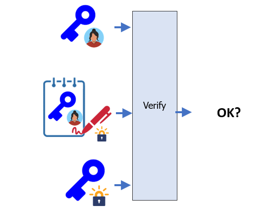
cd ~/Bob
openssl verify -CAfile ~/CA.crt ~/Alice.crt Assuming the verification step is successful, he then extracts Alice's public key and uses it to decrypt any messages Alice has encrypted and sent to him.
- Take a screenshot of the output of the verification step.

Using the mechanisms above, we can now set up a web server on a VM and configure a certificate that allows it to communicate with clients securely. To begin with, visit the Compute Engine console and create a VM using Ubuntu 22.04 LTS as a base image. Allow both HTTP and HTTPS traffic to the VM.
Note that this can be done via the gcloud commands below which create the two firewall rules for incoming web traffic then the VM with the rules attached to it.
gcloud compute firewall-rules create default-allow-http \
--allow=tcp:80 --target-tags=http-server
gcloud compute firewall-rules create default-allow-https \
--allow=tcp:443 --target-tags=https-server
gcloud compute instances create nginx-vm \
--image-family=ubuntu-2204-lts \
--image-project=ubuntu-os-cloud \
--zone=us-west1-b \
--machine-type=e2-medium \
--tags=http-server,https-serverOnce the VM is brought up, install packages for the web server we'll use (nginx) and for the certificate setup via Let's Encrypt (certbot).
sudo apt update -y sudo apt install nginx certbot python3-certbot-nginx -y
After installing nginx, you can now visit the external IP address of your VM, but only on its unencrypted port 80 (e.g. http://<External_IP>).
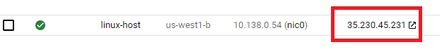
Type it into your browser and ensure you see nginx's default landing page.
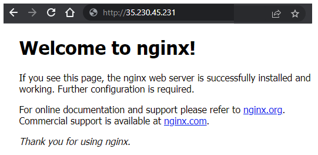
For Let's Encrypt to issue a certificate web site, it requires us to have a DNS name that points to the IP address that we wish to run the site from. By running the certbot client on that IP address, Let's Encrypt can validate that we own both the DNS name and the machine at the IP address it points to.
We do not have a DNS name that points to our VM, but we can use a free DNS registration service to obtain one that points to our VM's external IP address. To do so, visit any of the free DNS registration services below and register a name that includes your OdinID as part of it.
Note that if you get a rate-limit error on Let's Encrypt via one service, you will need to use the alternate ones. This is a result of Let's Encrypt being abused by malicious actors to create web sites with valid certificates that look legitimate. (This, of course, won't be an issue with our janky web application)
ipq.co

fdns.uk

noip.com
(Note: omit the dash since it is not allowed).
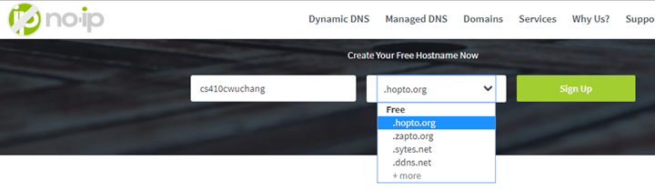
freenom.com
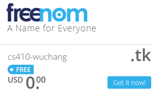
xip.io
Some services allow you to specify a name that includes an IP address that it resolves to. If you have difficulty with the sites above, then use names from the following xip-based sites.

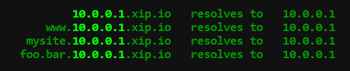
nip.io
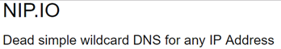

sslip.io

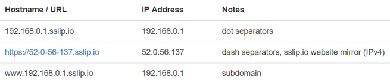
We'll now configure nginx to serve content for the DNS name you just registered. For these steps, use the entire DNS name of your site for <FMI>. (e.g. wuchang-nginx.ipq.co) To begin with, create a local directory that will serve as the document root for your site in the file system.
sudo mkdir -p /var/www/<FMI>Create an index.html file in the directory with a simple page.
sudo bash -c 'echo "<html><body><h1>Hello</h1></body
></html>" > /var/www/<FMI>/index.html'Sites that can be served by nginx are specified in files located in /etc/nginx/sites-available and those that are active have links in /etc/nginx/sites-enabled to those files. Create the site's configuration file.
sudo nano /etc/nginx/sites-available/<FMI>/etc/nginx/sites-available/<FMI>
server {
listen 80;
server_tokens off;
server_name <FMI>;
root /var/www/<FMI>;
}Once created, we will want to enable the site.
sudo ln -s /etc/nginx/sites-available/<FMI> /etc/nginx/sites-enabled/<FMI>
sudo systemctl restart nginxFinally, visit the web server via the DNS name (http://<FMI>). Ensure you get the web page you set up back.
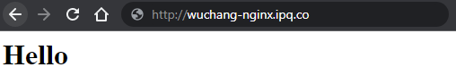
On your VM, we can now run the Let's Encrypt certbot client to obtain a signed certificate from Let's Encrypt for your name. Run the certbot command, specifying nginx. The Let's Encrypt client will attempt to obtain certificates for any site that has been enabled for nginx.
sudo certbot --nginxEnter your e-mail address for Let's Encrypt to contact you for certificate renewals and agree to the terms of service. Select your site and specify "No redirect". Visit the site using https://<FMI> to ensure that it has been setup.
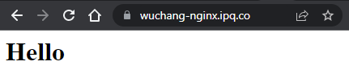
Click on the padlock icon to the left of the URL in order to inspect the web site's security information. Navigate the UI to find the certificate information indicating the issuer of the certificate and the validity dates.
- Take a screenshot of it for your lab notebook.
- How long is this certificate valid for?
- Click on the lock icon and find the details for the certificate. What is the two-letter Common Name of the issuer of the certificate?
Revisit the nginx configuration file for your site. certbot has modified the file to add the configuration for the https version of the site running on port 443. Within the file are locations of both the site's certificate that includes the site's public key signed by Let's Encrypt as well as the corresponding private key of the site. Using the location of the site's certificate in the file system, examine it
openssl x509 -in <path_to_certificate>/fullchain.pem -text -nooutFind the public key that has been generated for the web site, the URIs providing information for the Authority that has signed it, and the "pre-certificates" issued for the site. The pre-certificates are issued and published to support certificate transparency so that everyone can track the certificates each CA is signing.
- Take a screenshot of them for your lab notebook.
- What signature algorithm is used to sign the pre-certificates?
Visit https://crt.sh, https://ui.ctsearch.entrust.com/ui/ctsearchui or https://search.censys.io/certificates, then search for your DNS name and view the certificate you have been issued on the site. Click on the crt.sh ID to see the certificate information.
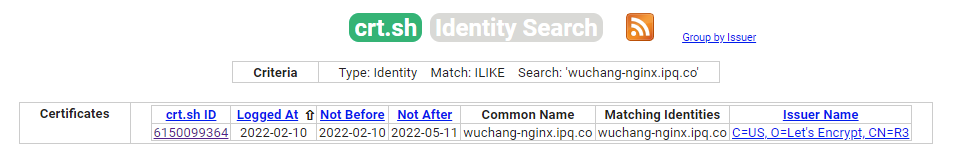
- Take a screenshot of it for your lab notebook showing the public key for your site as seen previously.
Finally, go back and view the private certificate key associated with the public key in the certificate.
openssl pkey -in <path_to_certificate_key>/privkey.pem -text -noout- Take a screenshot of the private key (e.g. its two primes).
To avoid unnecessary charges, delete the VM in the web console or via Cloud Shell using the command below:
gcloud compute instances delete nginx --zone=us-west1-b